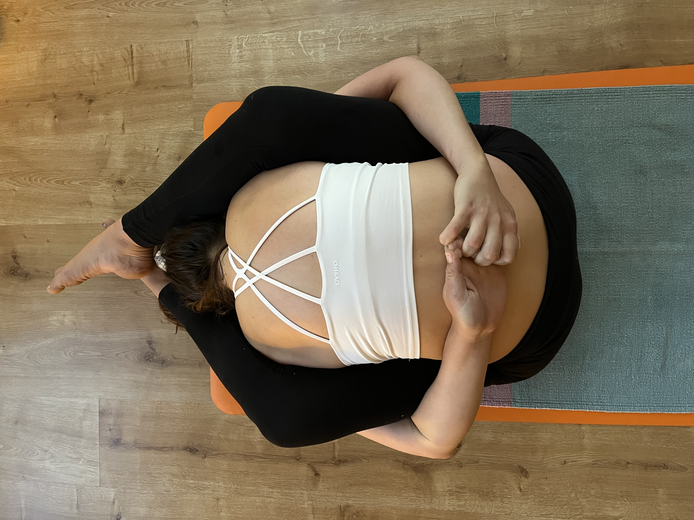
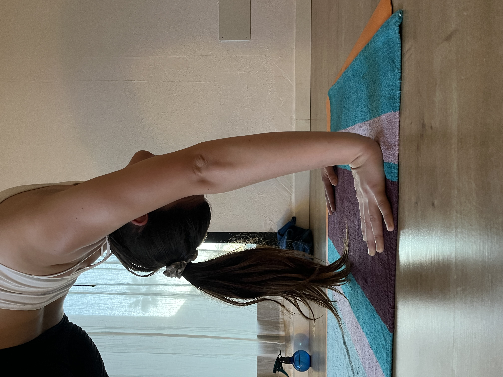
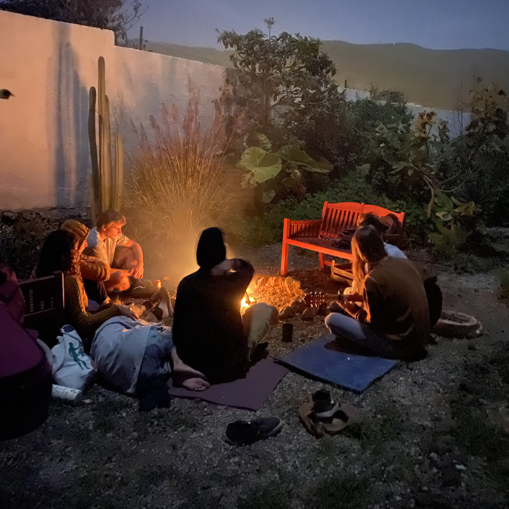

What We Offer

Yoga Practice
Traditional Ashtanga Yoga in Mysore style and guided classes for all levels, rooted in breath and presence.

Retreats & Workshops
Immersive experiences that invite introspection, movement, and connection — often held in nature.

1-on-1 Sessions
Personalized support through embodied guidance, intuitive listening, and somatic tools adapted to your needs.

Community Circles
Shared spaces for conscious dialogue, ritual, music, and reconnection with others on a path of awareness.